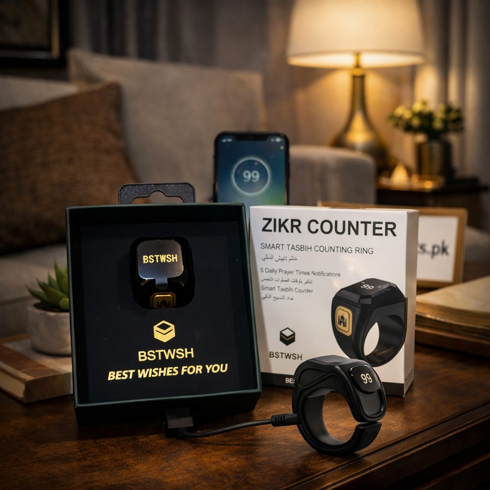
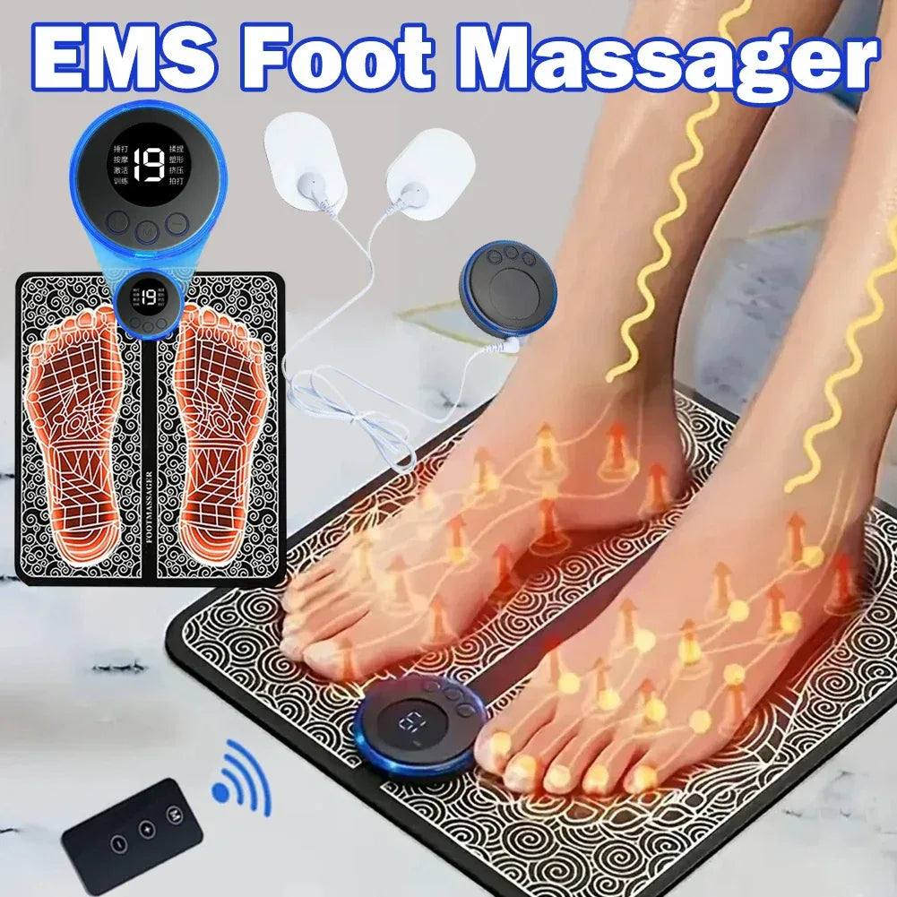

In Pakistan, elderly parents usually live with their children or close by, and caring for them is seen as both a duty and a blessing. As parents age, small daily tasks can become harder: getting warm on a winter night, easing tired feet after a walk to the mosque, keeping track of daily zikr, or finding the light switch at night.
This guide looks at simple adjustments and practical gadgets that add comfort. It is not medical advice. For any health concern, pain or condition, please consult their doctor first, and check with the doctor before using heat or massage products.
Start by observing their day
The best gifts come from paying attention. Spend a day noticing where your parent struggles or slows down. Do they find the bathroom floor slippery? Do they feel cold in the evenings? Do they struggle to read small print or find things at night? Each observation points to a small, useful change.
Warmth in winter
Many older people feel the cold more. In winter, a heating pad or an electric hot water bottle can make an evening on the sofa or a night in bed much cosier. Choose products with clear safety features and follow the instructions carefully. Never leave heating products on through the night unless the instructions say it is safe, and keep an eye on parents with reduced sensation in their skin, who may not notice when something is too hot.

A warm shawl, thick socks and a soft blanket within reach are simple additions that make a real difference.
Rest for tired feet
Walking to the market, standing in prayer and daily chores can leave feet tired. A foot massage pad can be a relaxing end to the day for many people. Again, check with their doctor first, especially if your parent has diabetes, circulation issues or any foot condition.
Support for daily worship
For many elderly parents, daily prayer and zikr are central to their day. A digital tasbih counter or a zikr ring makes counting easy, especially for those whose fingers are less nimble than before. A comfortable prayer chair for those who cannot sit on the floor, and a prayer mat placed in a quiet spot, also show thoughtful care.
Safety at home
- Night lights in the bedroom, corridor and bathroom help prevent falls.
- Non-slip mats in the washroom reduce slipping on wet floors.
- Grab bars beside the commode and in the shower add support.
- Keep floors clear of clutter and loose rugs.
- Place frequently used items at waist height so they do not need to bend or reach.

Staying connected
Many parents feel isolated when children are busy. A simple phone with large buttons, help setting up video calls with grandchildren abroad, or a radio for news and naats can bring joy. Make sure they know how to use any new device, and write simple instructions on a card.
Keeping medicines organised
A weekly pill organiser with separate compartments for each day and time helps avoid missed or double doses. Keep a written list of medicines and doses near the organiser, and update it after every doctor's visit.
Comfortable seating and rest
A firm chair with armrests is easier to get out of than a deep, soft sofa. A cushion for the lower back and a footstool help during long hours of sitting. Keep a small side table beside their favourite chair with water, glasses, the remote and their tasbih, so they do not need to keep getting up for small things.
Time matters most
Gadgets help, but nothing replaces time. Sitting with your parents for chai, listening to their stories and asking for their advice means more than any gift. Use comforts as a complement to that attention, not a replacement.
Finding comfort products
For heating pads, foot massagers and digital tasbih rings, the electronics and gadgets range at Trenducts.pk offers a variety of options, delivered across Pakistan.
Comfort is a form of respect
Making a parent's day a little easier is a way of saying thank you for everything they have done. Small, thoughtful adjustments to their home and routine bring real comfort in their later years.